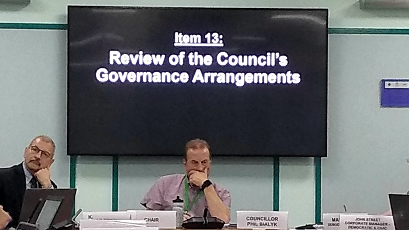
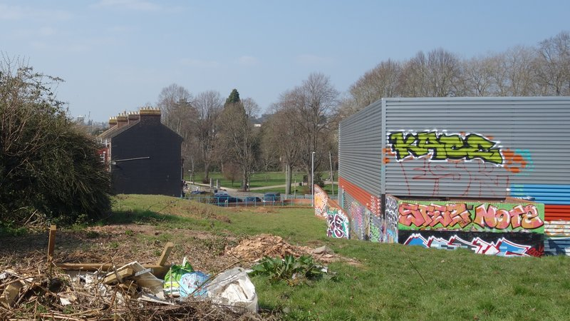
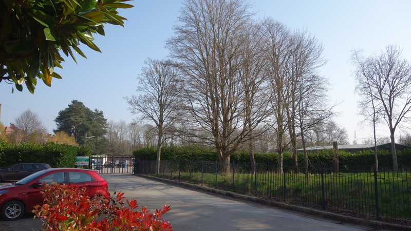
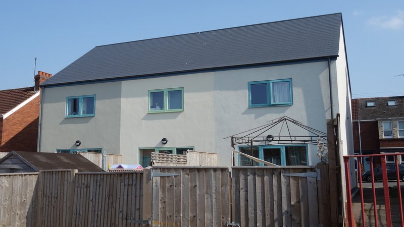
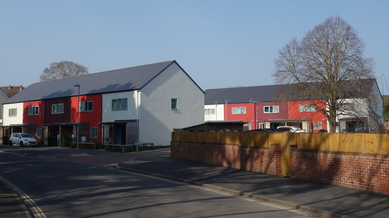

Council-owned companies have proliferated in recent years as local authorities across the country have pursued a wide range of commercial activities in response to pressures on their finances.
For its part Exeter City Council, with town planner Karime Hassan as chief executive, is seeking to profit from property development via its wholly-owned subsidiary Exeter City Living Ltd.
Last week Exeter Observer examined apparent breaches of local government legislation in council decisions to spend up to £55 million on the purchase and redevelopment of Guildhall shopping centre and to send its chief executive and another senior director to work for Exeter City Futures. Decisions taken in breach of the regulations may be unlawful and ineffective, could constitute maladministration and may be subject to judicial review, putting the council at risk.
To explore exposure to similar risks elsewhere in Exeter City Council decision-making we examined all the significant decisions it has so far made regarding Exeter City Living’s financial, operational and development plans — a mix of business case and business plan production and loan and site sale approvals.
We found that most of these decisions also apparently breached local government regulations intended to protect the public interest in the use of public land and money particularly when, as is the case in Exeter, the council is the planning authority and intends to develop its own property.
We also found governance arrangements which appear to have undermined effective scrutiny of decision-making about the company, as well as decisions that have been made without any scrutiny at all.
While public access to local authority meetings and documents is required by law, there are allowances for councils to exclude the public from parts of their meetings, and withhold related information, in specific circumstances in which the public interest is better served by denying public access than allowing it.
But there is an important exception which directly affects Exeter City Living.
The public cannot be excluded from part of a meeting, and information cannot be exempt from disclosure, if “it relates to proposed development for which the local planning authority may grant itself planning permission, or permission in principle, pursuant to regulation 3 of the Town and Country Planning General Regulations 1992”. (Regulation 3 prescribes the rules local authorities must follow when they develop their own land.)
This exception is not qualified by a public interest test (although disclosure of any personally-identifying information is always restricted under data protection law).
Local authorities are also required to publish at least 28 clear days’ notice of their intention to hold any part of an executive meeting in private, which the public can challenge by making representations as to why the meeting should instead be held openly.
In addition, councils must separately publish 28 clear days’ notice of any executive decision which is a “key decision”.
Government guidance reinforces the effect of these combined constraints when it says: “Transparency and openness should be the fundamental principle behind everything councils and other local government bodies do”.
It also says: “Local authorities should start from the presumption of openness and disclosure of information, and not rely on exemptions to withhold information unless absolutely necessary.”
Exeter City Council nevertheless routinely excludes the public from meetings which discuss Exeter City Living, and withholds related information, insisting that the rules about proposed development only apply when meetings relate to applications for planning permission and that the rules about private meetings only apply when the executive is making decisions.
Exeter City Council initially made most of its decisions about Exeter City Living in public. It approved £350,000 for a company feasibility study this way in October 2016, then just over £260,000 for business case preparation and company formation in February 2018.
In July 2018 it approved a loan of £4.25 million to the newly-formed company as well as a business plan detailing its proposed operational activities and development works to March 2019. A council committee had scrutinised the plans, partly in private, but the substance of the decision was made in public with only limited redaction of sensitive financial information in compliance with the law.
The late Pete Edwards, then council leader, made clear at the time that the council would continue with this approach. He said: “The business case and annual business plans would be subject to the same presumption in favour of being made publicly available” with only limited, legally compliant exceptions to cover sensitive financial information.
However by February 2019 things had changed. The council approved another loan to the company, this time for £5 million for “business operations and development activity”, and the company’s 2019-20 business plan, which laid out its intended “operational activities and development works”.
This decision was taken in private without 28 days’ clear notice, and the company’s 2019-20 business plan was not published at all.
Three months later Phil Bialyk proposed dramatic cuts to executive decision-making scrutiny at his first executive meeting as the new council leader.
The changes swept away the council’s previous approach to scrutiny, which had been praised by the Local Government Association, and removed opposition leaders from its executive so it became exclusively composed of Labour councillors.
The council’s scrutiny committees were already chaired by Labour members, as is the board which controls scrutiny committee agendas, which meets in private and does not publish its proceedings. Labour also holds 28 of 39 seats on the full council.
The council has since sought to take all its decisions about Exeter City Living in private.
 Council leader Phil Bialyk cutting executive decision-making scrutiny, with council chief executive Karime Hassan.
Two months after the scrutiny cuts were finalised in October 2019 the council published notices of its intention to hold two parts of its January executive meeting in private. One concerned a “Clifton Hill site report” and the other a “Special Report on Clifton Hill”. No more details were provided about the first, and the second only said: “Report from the Director (DB) on Clifton Hill”.
The reality was that the first was to approve a £16 million loan to Exeter City Living for the controversial redevelopment of the Clifton Hill sports centre site and the second was to approve the sale of the site at a discount of more than £2 million to the company.
The notices were published on 17 December 2019, less than 28 days’ clear of the meeting. Neither provided sufficient details to make representations as to why the meeting should be held openly. Neither should have been heard in private to the extent they related to proposed development.
 Clifton Hill sport centre development site: Exeter City Living intends construction of 42 housing units here, some for sale for more than £800,000, but the centre closed four years ago and redevelopment work is still not expected to begin for several more months.
Three months later the council published notice of another private executive meeting, this time to approve “Funding for the business case for Exeter City Living”. No more details were supplied.
The reality was that the meeting approved £360,000 for the development of business cases for three subsidiary companies: a market rent property management company, a consultancy company and a retrofit company.
Less than 28 days’ clear notice was given of the intention to discuss this in private, which it should not have been to the extent it related to proposed development.
As the business case funding was to come from existing budgets and service level agreements it appears the decision should have been taken by the executive instead of the full council. In which case it should also have been classified as a key decision, for which 28 days’ clear notice should separately have been given as, according to the council, it affected all electoral wards.
Then in June 2020 the council published notice that its July executive meeting would discuss Exeter City Living’s 2020-21 business plan in private.
The meeting was also scheduled to discuss “Governance for Exeter City Group” (Exeter City Living’s parent company) but despite the decision being recorded the chair said the item had been withdrawn. It subsequently reappeared, in different form and without notice attached, at the September executive meeting.
Less than 28 days’ clear notice was given of the intention to hear these items in private, which the first should not have been to the extent it related to proposed development and insufficient details were provided to make representations as to why they should have been heard openly.
 Belle Isle park depot development site: Exeter City Living has been awarded £675,000 from the government’s Brownfield Land Release Fund to enable construction of 46 housing units here. The council has also allocated £3.5 million to the cost of relocating the depot to its facility at Exton Road.
In September last year the council’s executive decided to sell the depot at Belle Isle park for £2.2 million to Exeter City Living for development as per the company’s business plan.
Plenty of notice was given of the intention to hold the meeting in private this time, but to the extent the decision related to proposed development it should not have been. The notice described the item as “Belle Isle Depot - Report on the Belle Isle Depot”.
The notice said nothing about the sale and no connection was made with the council’s separate decision to allocate £3.5 million to the cost of relocating the depot, without which the development would not be possible.
Nor was anything said about the council’s application for £675,000 towards the development from the government Brownfield Land Release Fund. The application, which included a detailed viability assessment of the development proposals, was submitted in June, before either depot relocation or site sale decision was made.
Then in February this year the council’s executive discussed Exeter City Living’s 2022-23 business plan and the previously-funded business case for a market rent property management company. It again met in private to do so despite both items relating to proposed development which had also been set out in detail in its June 2021 Brownfield Land Release Fund application.
Vaughan Road development site: Exeter City Living intends to oversee construction of 60 council and 32 market rent units here at a cost of £9.2 million. Demolition is under way but the development contractor has withdrawn “due to current market conditions” so delivery “has yet to be finalised”.
The council has also made three significant Exeter City Living-related decisions without publishing how and when they were taken. We asked it to explain each of them.
One was the decision to “pause the requirement to deliver a 2021-22 business plan as there were no additional sites or additional financial implications to be considered”. The council told us that its chief executive took this decision in private in March 2021 in consultation with the chief financial officer, council leader and relevant portfolio holders.
It said this was because the company’s 2020-21 business plan had not been adopted until July 2020 and “it was not practicable or a good use of resources to undertake the work for a new business plan when the 2020-21 business plan had still to be implemented and no new sites or funding were required for the 2021-2022 business plan period”.
The others were the decisions not to pursue the subsidiary consultancy or retrofit companies to which a share of the previously-approved £300,000 business case development funding had been allocated.
The council’s chief executive, who has been the council’s Exeter City Group Shareholder Representative since September 2020, took both these decisions in private on 19 April 2021.
The council says the powers it delegated to the Shareholder Representative immediately after incorporating the companies were sufficient to have taken these decisions like this. However we cannot find any reference to them in the company management agreement delegation scheme.
Exeter City Group delegation scheme detailing which decisions can be taken by company directors, which by the council’s Shareholder Representative and which by the full council.
Whether this delegation scheme is consistent with the legislation that defines the council’s executive decision-making structure is also unclear.
It says the full council should take decisions which do not appear to involve departure from the council’s budget and policy framework, which would mean they should be taken by the executive instead, and in doing so appears to undermine the powers which backbench councillors sitting on scrutiny committees would otherwise be able to invoke to hold executive decisions about Exeter City Living to account.
These include powers to “call in” executive decisions, delaying their implementation so they can be subjected to greater scrutiny, with the option to recommend that they are reconsidered and potentially overturned, and enhanced powers to access exempt or confidential information beyond those which councillors already have.
The government says that “the role that overview and scrutiny can play in holding an authority’s decision-makers to account makes it fundamentally important to the successful functioning of local democracy”.
That role appears to be compromised by either the full council or the Shareholder Representative taking decisions about Exeter City Living that might more properly be the responsibility of the executive instead.
Exeter Observer has been challenging the council over these issues since we became aware of them. We objected to the private decision to sell Belle Isle park depot last September then raised this decision again, as well as the Guildhall shopping centre decision, at a meeting with council officials in October.
We attended two further meetings with officials in November when we raised these issues again and followed up in December in writing, as requested, explaining our concerns about the council’s potential exposure to risk, referring to the relevant legislation and citing examples of other local authorities which correctly implement the notice regulations.
Then in January we submitted detailed representations objecting to Exeter City Living’s 2022-23 business plan and the business case for a market rent property management company, both of which are related to proposed development, being discussed in private.
This time the council said our representations would be included on the meeting agenda, with the council’s response, which would be that neither related to an application for planning permission and both concerned the council’s financial affairs. It also said the public interest would be better served by denying access than allowing it.
 Hamlin Gardens development site: the council approved a budget of £4 million for a four storey block of 21 flats here in October 2019, with Exeter City Living as its development agent, but had to increase the budget by £1.3 million last month in response to rising costs. Work has yet to begin.
Hamlin Gardens development site: the council approved a budget of £4 million for a four storey block of 21 flats here in October 2019, with Exeter City Living as its development agent, but had to increase the budget by £1.3 million last month in response to rising costs. Work has yet to begin.
When the meeting took place, the council leader suddenly announced both decisions would be deferred, although there is no mention of this in the minutes. Our representations have since been deleted from the agenda on the council website.
We submitted new, more comprehensive representations objecting to the executive discussing these items in private when it reconvened. The council again confirmed they would be included on the meeting agenda.
When it was subsequently published they were not. The council instead republished our previous objections, which did not include our response to the council’s interpretation of the regulations.
We asked the council what had happened, and were told it was an error which would be rectified by the republication of the agenda.
Instead, however, the council separately published an agenda supplement without updating the original agenda or the reports pack that went with it.
No mention of our representations was included in the decisions statement or the minutes that followed, and they have since been deleted from the agenda on the council’s website too.
The council published our representations, and its response, as an agenda supplement which was not attached to the rest of the executive meeting papers.
The meeting minutes confirm, however, that both items related to proposed development. The first item sought “approval to move into an ambitious delivery phase, with over 426 new homes in the development of nine Exeter City Living sites and a further 150-250 new homes on four Housing Revenue Account [council housing] sites”.
It said that the chief executive “explained that the report provided a timeline for the delivery of new homes” and that “he set out the proposed scenario for developing five sites already identified”. The recommendations referred to “a committed development pipeline” and “the timeline for the development programme”.
The second item referred to a business case “financial model developed with actual projects costs and actual incomes” based on “planned activities [and] deliverables”.
The minutes also record that the council’s Director Corporate Services, Baan Al-Khafaji, advised the executive on its response to these objections. She is also a director of Exeter City Living Ltd and its parent company, Exeter City Group Ltd (as is the council’s Section 151 officer).
As a company director she has a legal obligation to act in the interests of each company, and as a council director she has a legal obligation to act in the interests of the council. While the council owns both companies, the companies’ interests are not necessarily aligned with the council’s. In such circumstances her advice would constitute a conflict of interest.
Baan Al-Khafaji is also the council’s monitoring officer, who we were told would be investigating the issues we raised in detail in writing in December after our meetings with council officials. More than three months have passed since then and we have yet to receive a response.
On every occasion the council has held private meetings to discuss Exeter City Living it has cited the same exemption to justify doing so: the disclosure of information relating to the financial or business affairs of the council or company.
The scope of this exemption, even when proposed development is not being discussed, is limited by the Freedom of Information Act 2000. The Act prompted a major revision of the local government information transparency provisions when it came into force, since when it has determined their extent.
Information access judgements have further reduced the scope of this exemption over time. Simply referring to a risk of reduced profits or impaired negotiating ability may no longer be sufficient to engage it, and the public interest in matters involving spatial development and decision-making in general have significant weight.
In particular, disclosure of headline information such as the sale or rental value of housing resulting from development has been judged not to harm developers’ commercial interests as market rates on completion are held to be much more significant.
Minor information such as the value of individual subcontracts may be judged to be commercially sensitive, but only where the sensitivity of each element is demonstrated in detail.
 Anthony Road: Exeter City Living oversaw construction of three 3-bed houses here intending to sell them on the open market but when they remained unsold Exeter City Council bought them for £900,000 for council housing instead.
In addition, the extent to which Exeter City Living is a commercial company, and so the extent to which its affairs can be considered commercially sensitive, is restricted by its local authority-owned “Teckal” status which largely prohibits it from trading on the open market.
The company borrows money from the council to buy council land which is not offered for open sale, sometimes at preferential rates, and to commission the construction of houses all of which have so far been sold back to the council. Or it is commissioned directly by the council (via its Teckal exemption from EU procurement rules) to build council housing on council land.
The council directs the company and determines its viability, paying development and planning costs and providing privileged access to finance and land while allocating significant public expenditure to support its plans which does not appear on the company’s balance sheet.
The company also receives government grants as a council subsidiary and has yet to sell or rent any housing on the open market.
Hockings Green: Exeter City Living oversaw construction of nine 3-bed council houses here at a cost of £2.6 million.
Instead of simply claiming blanket commercial confidentiality for all information relating to Exeter City Living, the council should disclose all but very granular information, as promised by its leader when the company was set up.
The sensitivity of the information it does not disclose should be demonstrated in detail in the context of the company’s essentially non-commercial operations to avoid breaching local government transparency regulations and so putting related decisions at risk.
Headline information such as the projected price of housing for sale or rent that the council is building in Exeter is precisely the information that the public interest demands should be disclosed, to enable public consideration of whether Exeter City Living is delivering best value in its use of public land and money.
The council has so far allocated nearly £1 million to the company for start up and planning costs, loaned it nearly £25 million for development delivery, gifted it more than £2 million in land purchase discounts and commissioned or purchased just over £20 million of housing.
The company has also been granted more than £7 million of central government financial support, yet it has so far completed just 22 housing units.
There are more in the company’s development pipeline, but it has already taken more than five years to get this far. Is this “building at pace and scale” as the council’s chief executive says? Will the company “disrupt the private rental market in Exeter” as the council leader says?
With 57,000 dwellings in Exeter, of which 11,000 are estimated to be privately rented, the company is currently a long way short of doing either.
 Bovemoors Lane: Exeter City Living oversaw construction of ten 3-bed council houses here with ‘B’ grade energy ratings (the same as Anthony Road and Hockings Green) at a cost of £2.08 million.
Exeter City Living’s financing, activities and development plans are of vital public interest, both because local voters are entitled to know what the council is doing with public land and money and because of potential exposure to risk, not only from decisions that may breach local government legislation but also from wider challenges the company may face.
Development sector risks are all too apparent in the recent bankruptcy of Midas, which was headquartered at Pynes Hill, following its first loss in 40 years of trading on revenue of £291 million. Brexit, the coronavirus pandemic, labour shortages and materials price inflation, all of which it said brought it down, continue to affect every construction company in the country.
But there also is rising concern over the risks associated with council-owned companies more generally. Last year local authority auditor Grant Thornton reviewed three recent Reports in the Public Interest which addressed major financial problems at councils in Croydon, Northampton and Nottingham.
Nottingham City Council had made large losses with a wholly-owned energy company as a result of inadequate governance arrangements which Grant Thornton said had “led to institutional blindness” which downplayed the concerns that had been raised.
In its review the auditor highlighted the risk of optimism bias in local authority management of public money and criticised council pursuit of political objectives without effective scrutiny. It said these can lead to failures to understand the risks of embarking on complex, major projects without appropriate due diligence.
It emphasised the value of decision-making scrutiny and the importance of councils being willing to accept challenges. Citing the House of Commons Public Accounts Committee as a model for scrutiny rigour, it said its key characteristic is that “it is chaired by a member of the official opposition and its members, of all political parties, are required to demonstrate robust challenge”.
In January this year a housing subsidiary of Cambridgeshire County Council to which it loaned £114 million was reported to be at risk of failing to deliver on its business case, and last month Grant Thornton issued a second Report in the Public Interest regarding Croydon council, this time focussed on its failed wholly-owned Brick by Brick development company.
It identified “serious corporate and governance failings” and “significant concerns regarding decision-making, value for money, behaviour and governance arrangements”, concluding that the council “failed to ensure it was acting lawfully”. A criminal investigation may follow.
The auditor’s findings echoed previous government guidance identifying indicators of weak local authority governance.
These included inadequate scrutiny, transparency and public consultation and a lack of awareness and acceptance of the need for improvement, citing examples in which scrutiny had been weakened by council domination by one political party and lack of transparency in decision-making processes.